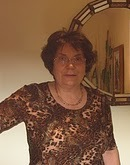
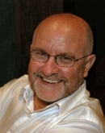
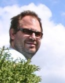
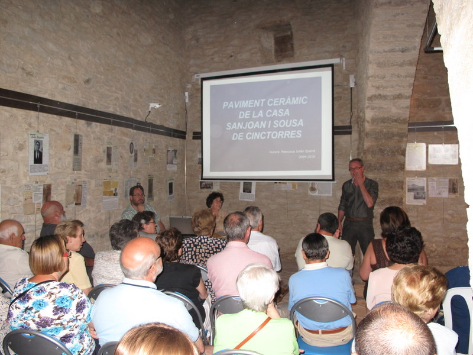
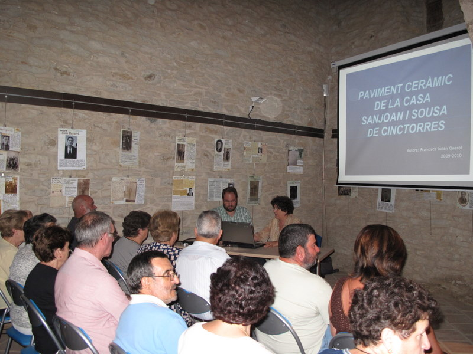
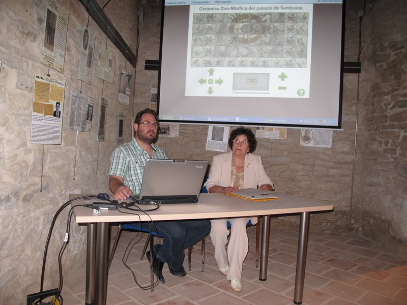

Información del proyecto SANTJOANS
El palacio de Santjoans y sobre todo la fantástica colección de cerámica Zoo-Mórfica, son uno de los mejores elementos del patrimonio de Cinctorres.
Este proyecto se inició con el objetivo de facilitar el disfrute de esta colección a la vez que se salvaguarda digital y documentalmente. Además, confiamos en que ayude a la promoción de Cinctorres y proporcione todavía más argumentos para que se pueda acometer por fin la restauración del Palau Santjoans.
Recordar que esta Web está pensada para facilitar el disfrute visual de los azulejos y que existe material paralelo que proporciona los datos resultantes de la investigación.
Participantes

Tareas: Iniciativa del proyecto y estudios.
Email:
Mas información:
- Su trabajo Paviment ceràmic de la casa Sanjoan i Sousa - Cinctorres, donde se exponen todos los datos que ha recopilado durante el estudio.

Tareas: Fotografía.
Email:
Tareas: Tratamiento de imágenes, CAD y maquetación de documentos.
Email:

Tareas: Programación y coordinación general.
Email:
Mas información:
- El código fuente del proyecto está disponible en github.com/jtpadilla/santjoans.
Primer contacto
Al acceder a este portal encontramos una pantalla de presentación con unas breves explicaciones. Estas explicaciones vienen acompañadas de algunas imágenes, las cuales se pueden ampliar pulsando sobre ellas con el ratón. Los enlaces incrustados en las explicaciones facilitan el acceso a otras imágenes y a explicaciones complementarias.Al mismo tiempo que se lee la presentación, las imágenes que componen el pavimento se irán cargando y aparecerá un botón que nos dará acceso al visor del pavimento en el momento que se hayan cargado todas las piezas.
Pulsando el botón Ver pavimento accederemos al visor del pavimento.
Digitalización de las piezas
Inicialmente se han incorporado las piezas centrales y las piezas de relleno (que son una repetición del mismo diseño con distintos ángulos de rotación en toda la periferia).Cada pieza es fotografiada e incorporada en varios tamaños, de forma que cada posición de zoom puede tener asignado si se desea un tamaño de imagen distinto a los demás. Sin entrar en detalles, decir que se busca una solución de compromiso para que el sistema se pueda utilizar tanto en conexiones de internet de alta velocidad como de baja velocidad y que existen seis posiciones de zoom.
Fidelidad de la representación
Después del primer estudio del proyecto concluimos que el diseño del pavimento estaba compuesto de cuatro zonas.- Escudo central: Está compuesto del escudo, formado por 12 piezas (4 * 3), rodeado todo él por un contorno de piezas que simulan el mármol, el cual a su vez está rodeado por otro contorno de piezas con una flor, al cual finalmente se le coloca tanto en la cabecera como en el pie (según el ángulo previsto para ver correctamente el escudo) una fila de azulejos con figuras zoomórficas.
- Piezas zoo-mórficas: Un total de 326 piezas zoo-mórficas rodean el escudo central dispuestas en cartabón (no se cuentan las que están dentro del escudo). Esta disposición en cartabón hace que en la unión con el escudo central existan medias piezas las cuales se ejecutaron con piezas con una flor.
- Piezas de relleno: Si tuviésemos una visión aérea veríamos que todo el conjunto está rodeado de un marco formado por piezas de bizcocho cuadradas (de dos piezas de ancho). Todo el espacio que queda entre las piezas zoo-mórficas y el marco de piezas de bizcocho está rellenado de unas piezas con una flor y en la misma disposición en cartabón que las piezas zoo-mórficas.
- Marco: Como ya se ha indicado anteriormente son las piezas de bizcocho que rodean todo el pavimento y están colocadas normalmente (sin cartabón) rodeando el resto de piezas.
- En los dos lados largos del marco de piezas que simulan mármol y que rodean el escudo, encontramos dos piezas cortadas de aproximadamente una sexta parte (como si fuera una cenefa muy fina) que ayuda a encajar las piezas alrededor de su contenido de forma adecuada.
- En las cuatro esquinas encontramos un cuadrado formado por cuatro piezas (2x2) que simulan mármol y que son del tipo que hay rodeando el escudo.
- En un rincón se utilizaron unas pocas piezas de relleno con diseño de flores distinto al habitual. Es como si les hubiesen faltado piezas y hubieran utilizado otro material.
- Primero se colocó el escudo y sus elementos decoradores (marco de mármol, marco de flores, cabecera y pie) donde se calculó que se encontraba el centro.
- Después se colocaron en cartabón las piezas zoo-mórficas alrededor del escudo (colocando más capas en la parte larga del comedor que en la ancha). Se puede ver como en el lado correspondiente a la puerta de acceso faltaron piezas, ya que se pierde la pauta habitual.
- Después alrededor de las piezas zoo-mórficas, y continuando con el cartabón, se colocan las piezas de relleno (que son las que tienen el motivo de una flor) procurando acercarse a las paredes hasta dejar el espacio de las dos piezas de bizcocho.
- La colocación se remata colocando el bizcocho en el espacio disponible entre la pared y las piezas exteriores de relleno.
Esto quiere decir que el relleno completa el espacio que hay entre las piezas zoo-mórficas y un perfecto salón rectangular.
El marco de piezas de bizcocho no tiene interés y no se reproduce.
El diseño que se ha representado, junto con el sistema de coordenadas con el que se ha trabajado, se puede ver en este diagrama del modelo virtual. Además podemos ver también el diagrama que corresponde al modelo real y este otro donde se muestran ambos modelos superpuestos.
En estos diagramas (sobre todo en el superpuesto) se puede observar como el área delimitada por el contorno rojo, correspondiente al escudo, y el área delimitada por el contorno amarillo, correspondiente a las figuras zoo-mórficas, es idéntico en el modelo virtual y en el real.
La relación de especies representadas y el conjunto de coordenadas para cada una de las múltiples piezas de una misma especie se puede encontrar en este documento.
Imágenes
Hemos pensado que las imágenes que utiliza este proyecto pueden resultar útiles como ilustraciones para otros proyectos, lo cual a su vez podrá ayudar a la promoción de este patrimonio, por lo que están publicadas bajo la siguiente licencia:
Imagenes de figuras zoomorficas del Palau Santjoans by Juan Padilla Julian is licensed under a Creative Commons Reconocimiento-NoComercial 3.0 Unported License.
Permissions beyond the scope of this license may be available at http://www.santjoans.es/proyecto.html#contacto.
Puedes descargar todas las imágenes en un único fichero ZIP (~1 GB).
Mejoras
En este proyecto hay muchas posibles mejoras, aunque teniendo en cuenta el tiempo disponible y el tiempo ya invertido resultará difícil indicar cuáles se acometerán y en qué orden.- Nuevas funcionalidades como poder mostrar las piezas clasificadas por criterios (por ejemplo el tipo de animal).
- Versión en catalán e inglés.
- Mejorar el diseño.
- Incorporación de más información del edificio, de las piezas, etc.
- Poder hacer un correcto revelado digital sobre los RAWs de las imágenes.
- Y muchas más cosas...
Presentación
Tanto este proyecto como los trabajos de estudio paralelos sobre Santjoans fueron presentados el 11 de Agosto de 2010 en el Antic Escorxador de Cinctorres como parte de la programación del Agost Cultural 2010.La presentación tuvo dos partes y ambas se apoyaron en estos dos documentos:
Paviment ceràmic de la casa Sanjoan i Sousa de Cinctorres y
Un model digital per a gaudir de la seua col·lecció de peces zoomòrfiques.
{kind=link}

{kind=link}

{kind=link}

Agradecimientos
Al ayuntamiento de Cinctorres por darnos todas las facilidades.A Juan Luis Bort y Alejandro Pérez a los que he tenido que recurrir en numerosas ocasiones.
Historial del proyecto
2010 — Inicio y presentación pública. El proyecto arrancó con el estudio fotográfico y documental del pavimento. El 11 de agosto de 2010 se presentó públicamente en el Antic Escorxador de Cinctorres, dentro del programa del Agost Cultural 2010, tanto el estudio académico de Francisca Julian como el primer prototipo de la aplicación web.
Enero–marzo 2011 — Desarrollo y lanzamiento. La aplicación web se publicó en enero de 2011 con un primer conjunto de piezas digitalizadas. Durante las semanas siguientes se fueron incorporando las piezas restantes en nueve versiones sucesivas (v1–v9). En la versión 4 se definió la licencia Creative Commons BY-NC para las imágenes. El 24 de marzo de 2011, con más de 400 piezas zoo-mórficas representadas, el proyecto se declaró completo.
Mayo 2011 — Compatibilidad con Internet Explorer 9. Se añadió soporte para IE9, logrando un rendimiento comparable al de Google Chrome en aquel momento.
Julio 2011 — Dominio propio. La web se migró a su propio servidor bajo el dominio santjoans.es, mejorando la velocidad de carga e identificación del proyecto.
Noviembre 2011 — Código fuente publicado. El código fuente de la aplicación original (en GWT) se publicó en un repositorio SVN, y posteriormente migrado a Git en github.com/jtpadilla/santjoans.
2026 — Actualización tecnológica. Sin cambios en el contenido ni en las imágenes, la aplicación fue reescrita con tecnología moderna para garantizar su funcionamiento a largo plazo. Véase la sección siguiente para más detalles.
Reescritura 2026 con Claude Code
En 2026 la aplicación fue completamente reescrita de cero con tecnología moderna.
Motivación. La versión original (2011) estaba construida sobre GWT (Google Web Toolkit), un framework que compila Java a JavaScript. GWT fue discontinuado en 2020 y su ecosistema de librerías auxiliares (google-web-toolkit-incubator, gwt-image-loader) lleva años sin mantenimiento. Además, la aplicación original necesitaba un servidor Java (Tomcat/Jetty) para servirse, lo que dificultaba el despliegue y el mantenimiento a largo plazo.
Stack nuevo. La reescritura utiliza exclusivamente tecnología web estándar: React 19 + TypeScript como capa de UI, Vite como herramienta de build, Zustand para el estado de la interfaz, y Vitest para los tests unitarios de la geometría del mosaico. El catálogo de piezas (originalmente en XML) se convierte a JSON en tiempo de build mediante un plugin Vite, eliminando cualquier procesamiento en el servidor. El resultado es un bundle de aproximadamente 70 KB (comprimido) que se sirve como sitio completamente estático.
Fidelidad. El motor de render sigue siendo Canvas 2D, reproduciendo el mismo sistema de coordenadas en milímetros que usaba GWT internamente. El algoritmo de hit-testing (detección de qué pieza se toca al hacer doble clic o tap) fue portado función a función desde el Java original, incluyendo el truncado entero de divisiones que es crítico para la precisión del resultado. El comportamiento visual y de interacción —zoom, pan, popup de pieza, minimapa, drag— es idéntico al original.
Novedades respecto al original. La nueva versión añade funcionalidades que la tecnología de 2011 no permitía: soporte táctil completo (arrastre con un dedo, pinch-to-zoom con dos dedos, tap para abrir el popup de una pieza), diseño adaptable (responsive) que ajusta el tamaño del canvas al viewport y reacciona a los cambios de orientación del dispositivo, y un rediseño visual coherente con tipografía moderna y paleta de colores inspirada en la cerámica mediterránea. Además, la interfaz está disponible en español, catalán, inglés y chino.
Proceso. La migración fue ejecutada utilizando Claude Code
(herramienta de programación asistida por IA de Anthropic).
Claude Code analizó el código Java original, diseñó la arquitectura TypeScript equivalente y generó el código de cada módulo
en cinco fases: andamiaje del proyecto, modelo de datos y geometría, motor canvas y componentes UI, verificación visual
e integración, y ajustes de CSS y compatibilidad cross-browser. El código fuente de la nueva versión está disponible
en el mismo repositorio: github.com/jtpadilla/santjoans
(carpeta santjoans-web/).
Software (información para desarrolladores)
Puedes encontrar el código fuente de este software aquí.
Versión original (2011): desarrollada con GWT de Google utilizando además las librerías
google-web-toolkit-incubator y
GWT Image loader (carpeta santjoans/ del repositorio).
Al iniciarse el desarrollo en 2011 se optó por utilizar tecnología HTML5 en lugar de productos propietarios como Adobe Flash, anticipando
la tendencia que con el tiempo resultó ser correcta.
Versión actual (2026): reescrita en React 19 + TypeScript + Vite (véase la sección Reescritura 2026 para más detalles).
La nueva versión se sirve como sitio estático sin necesidad de servidor de aplicaciones (carpeta santjoans-web/ del repositorio).